GaussianIntegral¶
About the GaussianIntegral class¶
The WaveBlocks Project
@author: R. Bourquin @copyright: Copyright (C) 2010, 2011, 2012, 2013, 2014, 2015, 2016 R. Bourquin @license: Modified BSD License
Inheritance diagram¶
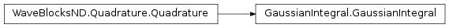Class documentation¶
-
class
WaveBlocksND.GaussianIntegral(*unused, **kunused)[source]¶ -
exact_result_gauss(Pibra, Piket, D, eps)[source]¶ Compute the overlap integral 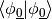 of the groundstate
 by using the symbolic formula:
by using the symbolic formula: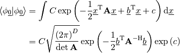
In a first step we combine the exponential parts of both wavepackets into
 .
Then we transform 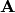, 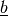 and
.
Then we transform 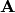, 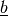 and  such that this matches the integrand above. The necessary transformations read:
such that this matches the integrand above. The necessary transformations read:
Note that this is an internal method and usually there is no reason to call it from outside.
Parameters: - Pibra – The parameter set
 of the bra 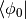.
of the bra 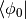. - Piket – The parameter set 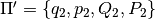 of the ket 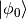.
- D – The space dimension
 the packets have.
the packets have. - eps – The semi-classical scaling parameter
 .
.
Returns: The value of the integral .
- Pibra – The parameter set
-
get_description()[source]¶ Return a description of this integral object. A description is a
dictcontaining all key-value pairs necessary to reconstruct the current instance. A description never contains any data.
-
get_qr()¶ Return the
QuadratureRulesubclass instance used for quadrature.Returns: The current instance of the quadrature rule.
-
initialize_operator(operator=None, matrix=False, eval_at_once=False)[source]¶ Provide the operator part of the inner product to evaluate. This function initializes the operator used for quadratures and for building matrices.
Note
The symbolic Gaussian integral formula can not handle operators at all.
Parameters: - operator – The operator of the inner product.
If
Nonea suitable identity is used. - matrix – Set this to
True(Default isFalse) in case we want to compute the matrix elements. For nasty technical reasons we can not yet unify the operator call syntax. - eval_at_once (Boolean, default is
False.) – Flag to tell whether the operator supports theentry=(r,c)call syntax. Since we do not support operators at all, it has no effect.
- operator – The operator of the inner product.
If
-
initialize_packet(pacbra, packet=None)[source]¶ Provide the wavepacket parts of the inner product to evaluate. Since the formula is for the inhomogeneous case explicitly, different wavepackets can be used for the ‘bra’ as well as the ‘ket’ part.
Parameters: - pacbra – The packet that is used for the ‘bra’ part.
- packet – The packet that is used for the ‘ket’ part.
-
perform_build_matrix(row, col)[source]¶ Computes the matrix elements
 by an exact symbolic formula.
by an exact symbolic formula.Warning
This method does only take into account the ground state basis components
from both,
the ‘bra’ and the ‘ket’. If the wavepacket  contains higher order basis functions
contains higher order basis functions  with non-zero coefficients 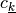, the inner products
computed are wrong! There is also no warning about that.
with non-zero coefficients 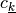, the inner products
computed are wrong! There is also no warning about that.Parameters: - row – The index
 of the component
of the component  of
of  .
. - row – The index
 of the component 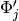 of
of the component 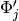 of  .
.
Returns: A complex valued matrix of shape
 .
.- row – The index
-
perform_quadrature(row, col)[source]¶ Evaluates the integral
 by an exact symbolic formula.
by an exact symbolic formula.Warning
This method does only take into account the ground state basis components
from both,
the ‘bra’ and the ‘ket’. If the wavepacket
contains higher order basis functions
with non-zero coefficients , the inner products
computed are wrong! There is also no warning about that.Parameters: - row – The index of the component of .
- row – The index of the component of .
Returns: A single complex floating point number.
- row – The index
-
prepare(rows, cols)[source]¶ Precompute some values needed for evaluating the integral
or the corresponding
matrix over the basis functions of and .
Note that this function does nothing in the current implementation.Parameters: - rows – A list of all with 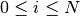
selecting the for which we precompute values.
- cols – A list of all with 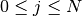
selecting the for which we precompute values.
- rows – A list of all
-
set_qr(QR)¶ Set the
QuadratureRulesubclass instance used for quadrature.Parameters: QR – The new QuadratureRuleinstance.
-